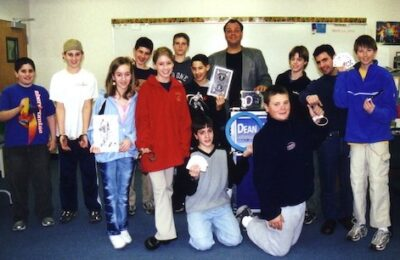
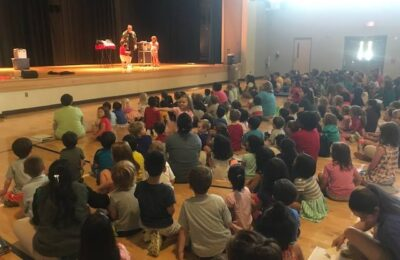

After-School
The Number 1 After-School Magic Show - Dean Alan the Magician
Bring your after-school program to life with the unforgettable magic of Dean Alan the Magician, Nashville’s trusted children’s entertainer for nearly 30 years. Dean specializes in after-school magic shows, SACC group entertainment, and elementary school programs that combine high-energy fun with age-appropriate humor and wonder. His performances keep kids laughing, engaged, and amazed, and his interactive magic workshops give them the chance to learn tricks they can perform themselves! Whether you’re planning a weekly enrichment activity or a one-time celebration, Dean Alan delivers magical moments your students will never forget.
When is a good time to have an after-school magic show? Early dismissal days, Teacher Workdays, End of the School Year, Special Occasions like Halloween and the Winter Holidays. Also, when it’s too cold to go outside, that’s an ideal time to have a show. And keep in mind, Dean Alan also offers Magic Workshops, where the kids get to learn some tricks. So you can have a show OR a workshop. Or you could do both in the same year.
In years past. on Teacher Workdays, it was not unusual for Dean Alan to do as many as 6 after-school programs at different schools on the same day! As long as you coordinate it so that he has enough time to get from place to place and a short time to set up, it is possible. Dean is available for After-school programs in Northern Virginia and Nashville TN.

web“I wanted to THANK YOU again for a great show! Everyone loved it. Thanks for a terrific evening!”
Mary Jean Osborne, Woodfield Elem. PTA
“On behalf of the students and staff who participated in “Abracadabra”, thank you for a great time!”
Jaye Cohen, Barrie School
“The show was extremely well performed and tailored perfectly to the age ranges of my kids. We loved the show!”
Jennie Allen, CASA Supervisor Arcola
“Thank you again for sharing your magic at Ashlawn Extended Day. The kids LOVED the show!”
Kimberly Boyle, Ashlawn Extended Day Supervisor
Ready to Add Some Magic to Your After-School Program?
Book Dean Alan the Magician Today!
Bring smiles, laughter, and learning to your students with a fun, interactive after-school magic show in Nashville. Contact Dean now to check availability and customize your perfect event! Just fill out the form below. You can also call us at 703-404-8902 or email at info@DeanAlanMagic.com

20246417_1674381782590591_3051015416854578359_n